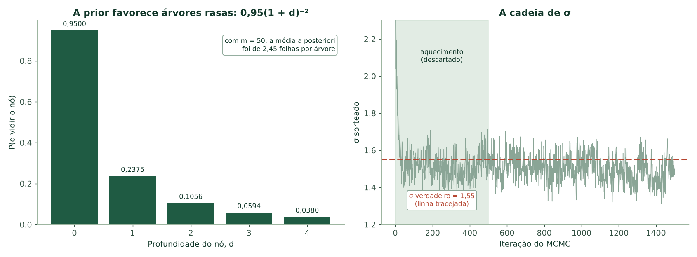
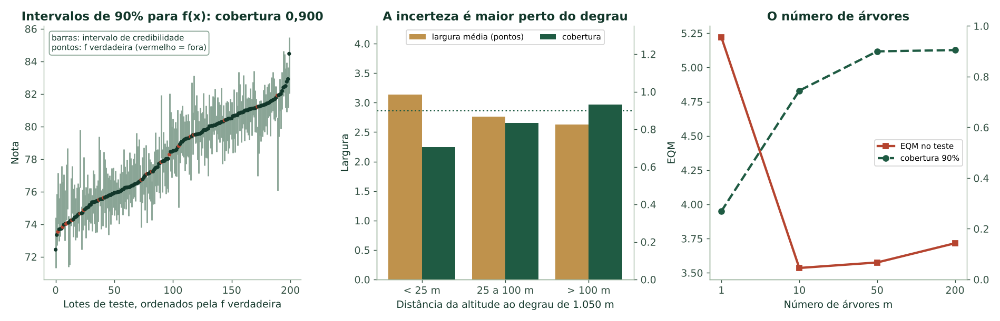

Bayesian additive regression trees (BART)
Soma de muitas árvores pequenas, regularizadas por priors e ajustadas por MCMC — predições com intervalos de credibilidade.
Comece por aqui
O boosting soma muitas árvores pequenas, e controla o sobreajuste com o encolhimento e o número de passos. O BART (Chipman, George e McCulloch, 2010) também soma muitas árvores pequenas, mas troca esses controles por uma prior: uma distribuição que torna improváveis as árvores grandes e as folhas com valores grandes. O ajuste é feito por MCMC, e o resultado não é uma predição, mas uma distribuição a posteriori de predições — da qual saem intervalos de credibilidade para cada lote.
Bagging, random forest e boosting dão uma predição. O BART dá uma predição e a incerteza sobre ela. Nos dados, os intervalos de 90% para a nota esperada de cada lote contiveram o valor verdadeiro em exatamente 90,0% dos lotes de teste — e foram mais largos onde a incerteza é de fato maior, perto do degrau de 1.050 m.
O que é o BART
O modelo é \(y=\sum_{j=1}^{m}g(x;T_j,M_j)+\varepsilon\), com \(\varepsilon\sim N(0,\sigma^2)\): cada \(g(x;T_j,M_j)\) é uma árvore \(T_j\) com valores de folha \(M_j\). Três priors regularizam: a árvore tende a ser rasa; os valores de folha são pequenos, de modo que nenhuma árvore domina; e \(\sigma\) fica numa faixa plausível. O algoritmo de ajuste é um retroajuste bayesiano: cada árvore é atualizada condicionalmente ao resíduo das outras.

| Aspecto | Random forest | Boosting | BART |
|---|---|---|---|
| Combinação | Média de árvores independentes | Soma em sequência | Soma, ajustada conjuntamente |
| Regularização | Média e sorteio de variáveis | Encolhimento e M | Priors |
| Incerteza | Não (sem extensões) | Não | Sim: a posteriori |
| Ajuste | Rápido | Rápido | MCMC: mais lento |
| Hiperparâmetros | mtry | M, ν, profundidade | m, priors (padrões funcionam bem) |
Pressupostos e como verificá-los
| Pressuposto ou cuidado | Por que importa | Como verificar |
|---|---|---|
| Erro normal com variância constante | O modelo de verossimilhança é esse. | Resíduos; há versões heterocedásticas. |
| Observações independentes | Verossimilhança fatorada. | Desenho do estudo. |
| Convergência do MCMC | Sorteios antes da convergência viciam tudo. | Traço de σ; várias cadeias. |
| Aquecimento suficiente | O começo da cadeia depende do ponto inicial. | Descarte as primeiras iterações. |
| Intervalos para f, não para y | O intervalo de credibilidade de f(x) não inclui o erro. | Para nova observação, some σ. |
Formulação e cálculo
Em que:
- \(m\)
- número de árvores (padrão 200; aqui 50)
- \(T_j\)
- estrutura da \(j\)-ésima árvore: cortes e folhas
- \(M_j\)
- valores \(\mu\) das folhas da árvore \(j\)
- \(g(x;T_j,M_j)\)
- o valor da folha em que \(x\) cai na árvore \(j\)
As três priors
Em que:
- \(\alpha=0{,}95,\ \beta=2\)
- padrões de Chipman et al.: árvores rasas
- \(k=2\)
- com a resposta reescalada para \([-0{,}5;\,0{,}5]\), a soma das \(m\) folhas fica nesse intervalo com probabilidade de cerca de 95%
- \(\nu=3\)
- graus de liberdade da prior de \(\sigma^2\)
- \(\lambda\)
- escolhido para que \(P(\sigma<\hat\sigma_{\text{linear}})=0{,}90\)
O retroajuste bayesiano
A cada iteração, para cada árvore \(j\): calcula-se o resíduo parcial \(R_j=y-\sum_{k\ne j}g(x;T_k,M_k)\); propõe-se uma mudança na estrutura (crescer uma folha ou podar um par de folhas), aceita ou rejeitada por Metropolis-Hastings com os \(\mu\) integrados; sorteiam-se os \(\mu\) das folhas da normal a posteriori; por fim, sorteia-se \(\sigma^2\) da qui-quadrado inversa.
Em que:
- \(n_\ell\)
- número de observações na folha \(\ell\)
- \(S_\ell\)
- soma dos resíduos parciais na folha
Exemplo numérico: as priors nestes dados
Com \(m=50\), \(\sigma_\mu=0{,}5/(2\sqrt{50})=0{,}0354\) na escala reescalada: cada árvore contribui com valores de folha da ordem de 3,5% da amplitude da nota. A prior de profundidade dá 0,9500 na raiz, 0,2375 no primeiro nível, 0,1056 no segundo e 0,0594 no terceiro; a posteriori, as árvores tiveram em média 2,45 folhas. O modelo é, de fato, uma soma de 50 árvores minúsculas.
| Iterações | σ médio |
|---|---|
| 1-10 | 2,105 |
| 11-50 | 1,590 |
| 51-200 | 1,526 |
| 201-500 | 1,506 |
| 501-1.000 | 1,511 |
| 1.001-1.500 | 1,487 |
Propriedades
- Fornece a distribuição a posteriori de f(x) e de σ.
- Os padrões das priors funcionam bem em uma grande variedade de problemas.
- m grande com prior forte nas folhas: cada árvore é um "aprendiz fraco", como no boosting.
- A proporção de uso das variáveis serve à seleção de variáveis, sobretudo com m pequeno (Bleich et al., 2014).
- O MCMC é mais lento que os métodos de comitê clássicos.
- Extensões: probit (classificação), sobrevivência, efeitos causais heterogêneos (BCF).
Como interpretar os resultados
| Elemento | O que informa | Cuidado |
|---|---|---|
| Média a posteriori de f(x) | A predição pontual. | Comparável às dos outros comitês. |
| Intervalo de credibilidade de f(x) | Incerteza sobre a média de y em x. | Não inclui o erro de uma observação. |
| Intervalo preditivo | Onde deve cair uma nova y. | Some σ a cada sorteio. |
| σ a posteriori | Desvio-padrão do erro. | Compare com o de outros modelos. |
| Proporção de uso das variáveis | Quais variáveis as árvores usam. | Pouco informativa com m grande. |
Como executar no R e em Python
Onde executar o código em Python
Não é preciso instalar nada: o Google Colab é um computador na nuvem, gratuito, que executa Python pelo navegador e já traz as bibliotecas usadas aqui (numpy, scipy e matplotlib).
O pacote BART (Sparapani, Spanbauer e McCulloch, 2021) traz wbart() para resposta contínua, pbart() e lbart() para binária, surv.bart() para sobrevivência, e aceita matrizes de preditoras. Os argumentos ntree, base, power, k, sigdf e sigquant são as priors; nskip e ndpost, o aquecimento e os sorteios guardados. O dbarts (função bart()) é outra implementação, com interface de fórmula. Em Python não há implementação na biblioteca padrão de aprendizado; o script desta ficha implementa o algoritmo em numpy para que cada passo fique visível (o pacote pymc-bart é uma opção pronta).
library(BART)
X <- as.matrix(cafe[, c("alt","temp","chuva","somb","nfol","ph")])
set.seed(1)
fit <- wbart(x.train = X, y.train = cafe$nota, ntree = 50,
nskip = 1000, ndpost = 1000)
plot(fit$sigma, type = "l") # convergência
fit$yhat.train.mean # predições
Exemplo de aplicação
Contexto dos dados
Os dados são fictícios e foram criados pelo autor: 600 lotes de café, cada um com a nota sensorial (escala SCA, de 70,0 a 86,1) e seis variáveis da lavoura — altitude (600 a 1.500 m), temperatura média (14 a 26 °C), chuva anual (mm), sombreamento (%), nitrogênio foliar (dag/kg) e pH do solo. Um lote é fino quando a nota é 80 ou mais (204 lotes, 34,0%). O processo gerador é conhecido e foi desenhado para ter as duas estruturas que os modelos aditivos não representam: um degrau de +4,6 pontos acima de 1.050 m de altitude e uma interação — o sombreamento melhora a nota quando a temperatura passa de 20,5 °C e a piora abaixo disso —, além de partes suaves em chuva, nitrogênio e pH e um erro de desvio-padrão 1,55. Altitude e temperatura têm correlação de −0,822, como na realidade. Como a verdade é conhecida, sabem-se os dois pisos: nenhum modelo de regressão pode ter erro quadrático esperado abaixo de \(\sigma^2=2{,}4025\), e nenhum classificador pode errar menos que o erro de Bayes, 0,1596. O mesmo conjunto atravessa as dez fichas dos grupos de árvores e de classificadores, o que permite comparar todos os métodos na mesma régua.
Nesta ficha, 400 lotes são usados para o ajuste e 200 ficam como teste.
Código em R
# BART (Bayesian additive regression trees): exemplo completo ----
# Pacotes: BART (Sparapani, Spanbauer e McCulloch) ou dbarts
# Dados fictícios: 600 lotes de café (arquivo cafe.csv, pasta scripts/ do site).
# Baixe o arquivo para a pasta de trabalho, ou leia direto do endereço:
url <- "https://cassiushenrique.github.io/ModelosEstatisticos/scripts/cafe.csv"
cafe <- if (file.exists("cafe.csv")) read.csv("cafe.csv") else read.csv(url)
str(cafe) # nota, fino (0/1), alt, temp, chuva, somb, nfol, ph
cafe$fino_f <- factor(cafe$fino, levels = c(0, 1), labels = c("nao", "fino"))
table(cafe$fino_f)
# install.packages("BART")
library(BART)
X <- as.matrix(cafe[, c("alt","temp","chuva","somb","nfol","ph")])
set.seed(5)
i_te <- sample(nrow(cafe), 200)
Xtr <- X[-i_te, ]; ytr <- cafe$nota[-i_te]; Xte <- X[i_te, ]; yte <- cafe$nota[i_te]
# ---- 1. O ajuste: 50 árvores (o padrão do pacote é 200), 1.000 aquecimento, 1.000 sorteios
set.seed(1)
fit <- wbart(x.train = Xtr, y.train = ytr, x.test = Xte,
ntree = 50, nskip = 1000, ndpost = 1000,
base = 0.95, power = 2, k = 2, # priors de Chipman et al. (2010)
sigdf = 3, sigquant = 0.90)
# ---- 2. Convergência: a cadeia de sigma
plot(fit$sigma, type = "l", xlab = "iteração", ylab = "sigma")
abline(v = 1000, lty = 2)
# ---- 3. Predição e incerteza no teste
pred <- fit$yhat.test.mean
mean((yte - pred)^2) # EQM no teste
li <- apply(fit$yhat.test, 2, quantile, 0.05) # intervalo de 90% para f(x)
ls <- apply(fit$yhat.test, 2, quantile, 0.95)
mean(ls - li) # largura média
summary(fit$sigma[-(1:1000)]) # sigma a posteriori
# Intervalo PREDITIVO para uma nova nota: soma o erro sigma a cada sorteio
s <- fit$sigma[-(1:1000)]
ynovo <- fit$yhat.test + matrix(rnorm(length(fit$yhat.test)), nrow(fit$yhat.test)) * s
pli <- apply(ynovo, 2, quantile, 0.05); pls <- apply(ynovo, 2, quantile, 0.95)
mean(yte >= pli & yte <= pls) # cobertura no teste
# ---- 4. Uso das variáveis (mais informativo com poucas árvores, ex.: ntree = 10)
colMeans(fit$varprob)
# ---- 5. Classificação: probit BART
set.seed(1)
fitc <- pbart(x.train = Xtr, y.train = cafe$fino[-i_te], x.test = Xte, ntree = 50)
p <- fitc$prob.test.mean
mean((p >= 0.5) != cafe$fino[i_te])
A mesma análise em Python, com os resultados
Cole o código em um notebook do Google Colab ↗ e execute com Shift+Enter. Os valores abaixo são a saída desse código.
import numpy as np
# ------------------------------------------------------------------
# Bloco comum às fichas deste grupo: funções auxiliares e dados (cab16)
# ------------------------------------------------------------------
import numpy as np
from scipy.stats import norm
# ------------------------------------------------------------------
# Bloco comum às fichas deste grupo: funções auxiliares e dados (dados16)
# ------------------------------------------------------------------
import numpy as np
import pandas as pd
def le_csv(nome):
"""Lê o arquivo de dados da ficha: primeiro na pasta atual; se não
estiver lá (por exemplo, no Google Colab), direto do site."""
try:
return pd.read_csv(nome)
except FileNotFoundError:
return pd.read_csv('https://cassiushenrique.github.io/ModelosEstatisticos/scripts/' + nome)
# Dados fictícios: 600 lotes de café (arquivo cafe.csv, pasta scripts/ do site)
cafe = le_csv('cafe.csv')
ALT, TEMP, CHUVA = (cafe[k].to_numpy(float) for k in ('alt', 'temp', 'chuva'))
SOMB, NFOL, PH = (cafe[k].to_numpy(float) for k in ('somb', 'nfol', 'ph'))
NOTA = cafe['nota'].to_numpy(float); FINO = cafe['fino'].to_numpy(int)
NOMES=['alt','temp','chuva','somb','nfol','ph']
ROT={'alt':'Altitude','temp':'Temperatura','chuva':'Chuva','somb':'Sombreamento','nfol':'N foliar','ph':'pH'}
X=np.column_stack([ALT,TEMP,CHUVA,SOMB,NFOL,PH])
NC,PC=X.shape; SIGN=1.55
def f_nota(alt,temp,chuva,somb,nfol,ph):
deg=4.6*(np.asarray(alt)>=1050); rampa=0.0028*np.clip(np.asarray(alt)-700,0,None)
inter=np.where(np.asarray(temp)>20.5,0.052*np.asarray(somb),-0.030*np.asarray(somb))
agua=-2.6e-6*(np.asarray(chuva)-1450)**2
nitro=2.9*np.log(np.asarray(nfol)/1.6); acid=-1.9*(np.asarray(ph)-5.4)**2
return 74.0+deg+rampa+inter+agua+nitro+acid
def verdade(A): return f_nota(A[:,0],A[:,1],A[:,2],A[:,3],A[:,4],A[:,5])
# ------------------------------------------------------------------ fim do bloco comum
def c(v, d=4): return ('%.*f' % (d, v)).replace('.', ',')
def eqm(o, p): return float(np.mean((np.asarray(o) - np.asarray(p))**2))
def r2(o, p): return 1 - float(np.sum((np.asarray(o)-np.asarray(p))**2))/float(np.sum((np.asarray(o)-np.mean(o))**2))
def acur(o, p): return float(np.mean(np.asarray(o) == np.asarray(p)))
MU = verdade(X) # média verdadeira da nota
PVER = 1 - norm.cdf((80 - MU)/SIGN) # P(fino | x) verdadeira
ERRO_BAYES = float(np.mean(np.minimum(PVER, 1 - PVER)))
EQM_PISO = SIGN**2
def dobras(n, k, seed):
rg = np.random.default_rng(seed)
d = np.tile(np.arange(k), int(np.ceil(n/k)))[:n]; rg.shuffle(d); return d
def cv_reg(fabrica, A, y, k=10, seed=0, reps=1):
"""EQM por validação cruzada. fabrica() devolve um estimador sklearn novo."""
tot = []
for r in range(reps):
d = dobras(len(y), k, seed + 101*r); e = np.empty(len(y))
for j in range(k):
tr, te = d != j, d == j
m = fabrica().fit(A[tr], y[tr]); e[te] = y[te] - m.predict(A[te])
tot.append(float(np.mean(e**2)))
return float(np.mean(tot)), (float(np.std(tot, ddof=1)) if reps > 1 else 0.0)
def cv_clf(fabrica, A, y, k=10, seed=0, reps=1, prob=False):
"""Erro de classificação (e, se prob, log-loss e Brier) por validação cruzada."""
err = []; ll = []; br = []
for r in range(reps):
d = dobras(len(y), k, seed + 101*r); pred = np.empty(len(y)); pp = np.empty(len(y))
for j in range(k):
tr, te = d != j, d == j
m = fabrica().fit(A[tr], y[tr]); pred[te] = m.predict(A[te])
if prob: pp[te] = m.predict_proba(A[te])[:, 1]
err.append(float(np.mean(pred != y)))
if prob:
q = np.clip(pp, 1e-6, 1 - 1e-6)
ll.append(float(-np.mean(y*np.log(q) + (1 - y)*np.log(1 - q))))
br.append(float(np.mean((pp - y)**2)))
if prob: return float(np.mean(err)), float(np.mean(ll)), float(np.mean(br))
return float(np.mean(err)), (float(np.std(err, ddof=1)) if reps > 1 else 0.0)
def padroniza(A, ref=None):
ref = A if ref is None else ref
mu, sd = ref.mean(0), ref.std(0, ddof=1); return (A - mu)/sd, mu, sd
DADOS_TXT = ('600 lotes de café, nota sensorial (escala SCA, de 70 a 86) e seis variáveis de lavoura: '
'altitude, temperatura média, chuva anual, sombreamento, N foliar e pH. Lote "fino" = nota >= 80.')
# ------------------------------------------------------------------ fim do bloco comum
from scipy.stats import chi2
from sklearn.linear_model import LinearRegression
# ------------------------------------------------------------------
# BART (Chipman, George e McCulloch, 2010), implementado em numpy para
# que cada passo fique visível. No R, use o pacote BART ou dbarts.
# ------------------------------------------------------------------
class Arvore:
"""Uma árvore: nós internos (var, corte, esq, dir) e folhas (mu).
Guarda, para cada folha, os índices dos lotes de treino e de teste."""
def __init__(s, ntr, nte):
s.no = {0: dict(prof=0, folha=True, mu=0.0, itr=np.arange(ntr), ite=np.arange(nte), pai=None)}
s.prox = 1
def folhas(s): return [k for k, v in s.no.items() if v['folha']]
def nogs(s): # nós internos cujos dois filhos são folhas
return [k for k, v in s.no.items() if not v['folha'] and s.no[v['e']]['folha'] and s.no[v['d']]['folha']]
def logml(soma, n, s2, s2mu):
"""Log-verossimilhança marginal de uma folha, com mu integrado (a menos de constantes)."""
return -0.5*np.log(1 + n*s2mu/s2) + s2mu*soma**2/(2*s2*(s2 + n*s2mu))
def bart(Xtr, ytr, Xte, m=50, iters=1500, queima=500, alfa=0.95, beta=2.0, k=2.0, nu=3, q=0.90,
semente=0, ncortes=100, minfolha=3):
rg = np.random.default_rng(semente)
lo, hi = ytr.min(), ytr.max(); ys = (ytr - lo)/(hi - lo) - 0.5 # resposta em [-0,5; 0,5]
n, p = Xtr.shape; nte = len(Xte)
s2mu = (0.5/(k*np.sqrt(m)))**2 # prior das folhas
sig_ols = np.std(ys - LinearRegression().fit(Xtr, ys).predict(Xtr), ddof=p+1)
lam = sig_ols**2*chi2.ppf(1 - q, nu)/nu # prior de sigma²
grade = [np.unique(np.quantile(Xtr[:, j], np.linspace(0, 1, ncortes + 2)[1:-1])) for j in range(p)]
psplit = lambda d: alfa*(1 + d)**(-beta)
arv = [Arvore(n, nte) for _ in range(m)]
ajtr = np.zeros((m, n)); ajte = np.zeros((m, nte)); tot = ajtr.sum(0)
s2 = sig_ols**2
sig_cad = []; pred = []; folhas = []; usos = np.zeros(p); aceite = [0, 0, 0, 0]
for it in range(iters):
for t in range(m):
T = arv[t]; R = ys - (tot - ajtr[t]) # resíduo parcial
fl = T.folhas(); ng = T.nogs()
cresce = (len(fl) == 1) or (rg.random() < 0.5)
if cresce:
h = fl[rg.integers(len(fl))]; v = T.no[h]; j = rg.integers(p)
xs = Xtr[v['itr'], j]; cand = grade[j][(grade[j] >= xs.min()) & (grade[j] < xs.max())]
if len(cand):
c_ = cand[rg.integers(len(cand))]; esq = xs <= c_
ie, idd = v['itr'][esq], v['itr'][~esq]
if len(ie) >= minfolha and len(idd) >= minfolha:
d = v['prof']; aceite[0] += 1
lr = (logml(R[ie].sum(), len(ie), s2, s2mu) + logml(R[idd].sum(), len(idd), s2, s2mu)
- logml(R[v['itr']].sum(), len(v['itr']), s2, s2mu))
pai_nog = (v['pai'] is not None and v['pai'] in ng)
w2 = len(ng) + 1 - (1 if pai_nog else 0)
lt = np.log((0.5)/(1.0 if len(fl) == 1 else 0.5)) + np.log(len(fl)/w2)
lp = np.log(psplit(d)) + 2*np.log(1 - psplit(d + 1)) - np.log(1 - psplit(d))
if np.log(rg.random()) < lr + lt + lp:
aceite[1] += 1
ee = Xte[v['ite'], j] <= c_
a, b = T.prox, T.prox + 1; T.prox += 2
T.no[a] = dict(prof=d+1, folha=True, mu=0.0, itr=ie, ite=v['ite'][ee], pai=h)
T.no[b] = dict(prof=d+1, folha=True, mu=0.0, itr=idd, ite=v['ite'][~ee], pai=h)
v.update(folha=False, var=j, corte=c_, e=a, d=b)
elif ng:
h = ng[rg.integers(len(ng))]; v = T.no[h]; a, b = T.no[v['e']], T.no[v['d']]; d = v['prof']
aceite[2] += 1
lr = (logml(R[v['itr']].sum(), len(v['itr']), s2, s2mu)
- logml(R[a['itr']].sum(), len(a['itr']), s2, s2mu) - logml(R[b['itr']].sum(), len(b['itr']), s2, s2mu))
nfl_dep = len(fl) - 1
pai_vira_nog = v['pai'] is not None and all(T.no[x]['folha'] or x == h for x in (T.no[v['pai']]['e'], T.no[v['pai']]['d']))
w2_dep = len(ng) - 1 + (1 if pai_vira_nog else 0)
lt = np.log((1.0 if nfl_dep == 1 else 0.5)/0.5) + np.log(len(ng)/nfl_dep)
lp = np.log(1 - psplit(d)) - np.log(psplit(d)) - 2*np.log(1 - psplit(d + 1))
if np.log(rg.random()) < lr + lt + lp:
aceite[3] += 1
del T.no[v['e']], T.no[v['d']]; v.update(folha=True, mu=0.0)
# sorteio das médias das folhas, dada a estrutura
ftr = np.empty(n); fte = np.empty(nte)
for h in T.folhas():
v = T.no[h]; nn = len(v['itr']); S = R[v['itr']].sum()
prec = nn/s2 + 1/s2mu
v['mu'] = rg.normal((S/s2)/prec, np.sqrt(1/prec))
ftr[v['itr']] = v['mu']; fte[v['ite']] = v['mu']
tot += ftr - ajtr[t]; ajtr[t] = ftr; ajte[t] = fte
# sorteio de sigma²
sse = np.sum((ys - tot)**2)
s2 = 1/rg.gamma((nu + n)/2, 2/(nu*lam + sse))
sig_cad.append(np.sqrt(s2)*(hi - lo))
if it >= queima:
pred.append((ajte.sum(0) + 0.5)*(hi - lo) + lo)
folhas.append(np.mean([len(T.folhas()) for T in arv]))
for T in arv:
for v in T.no.values():
if not v['folha']: usos[v['var']] += 1
return dict(pred=np.array(pred), sigma=np.array(sig_cad), folhas=np.array(folhas),
usos=usos/usos.sum(), aceite=aceite, s2mu=s2mu, lam=lam, sig_ols=sig_ols*(hi - lo))
y = NOTA
rg = np.random.default_rng(5); idx = rg.permutation(NC); te, tr = idx[:200], idx[200:]
print('LOTES DE CAFÉ:', DADOS_TXT)
print('Treino: 400 lotes. Teste: 200. Verdade conhecida: sigma = %s.' % c(SIGN, 2))
print('\n' + '='*70)
print('AS PRIORIS, como ficam nestes dados (m = 50 árvores)')
r = bart(X[tr], y[tr], X[te], m=50, iters=1500, queima=500, semente=1)
print()
print(' profundidade: P(dividir um nó de profundidade d) = 0,95 (1 + d)^-2')
for d in range(4): print(' d = %d: %s' % (d, c(0.95*(1 + d)**-2.0)))
print(' folhas: mu ~ N(0, sigma_mu²), sigma_mu = 0,5/(k raiz(m)) = %s (escala [-0,5; 0,5])' % c(np.sqrt(r['s2mu'])))
print(' sigma²: qui-quadrado inversa escalada, nu = 3, ancorada no sigma do modelo')
print(' linear (%s), com P(sigma < sigma_linear) = 0,90' % c(r['sig_ols'], 3))
print('\n' + '='*70)
print('A CADEIA: 1.500 iterações, 500 de aquecimento descartadas')
s = r['sigma']
print()
print('%12s %16s' % ('iterações', 'sigma médio'))
for a, b in [(0, 10), (10, 50), (50, 200), (200, 500), (500, 1000), (1000, 1500)]:
print('%12s %16s' % ('%d-%d' % (a + 1, b), c(float(s[a:b].mean()), 3)))
print()
print(' propostas de crescer: %d, aceitas %d (%s)' % (r['aceite'][0], r['aceite'][1], c(r['aceite'][1]/r['aceite'][0], 3)))
print(' propostas de podar: %d, aceitas %d (%s)' % (r['aceite'][2], r['aceite'][3], c(r['aceite'][3]/r['aceite'][2], 3)))
print(' número médio de folhas por árvore (pós-aquecimento): %s' % c(float(r['folhas'].mean()), 2))
print('\n' + '='*70)
print('O QUE O BART ENTREGA: predição E incerteza')
P = r['pred']; mp = P.mean(0)
li, ls = np.quantile(P, 0.05, 0), np.quantile(P, 0.95, 0)
pos = s[500:]
print()
print(' EQM no teste (média a posteriori) = %s' % c(eqm(y[te], mp)))
print(' EQM da função verdadeira no teste = %s' % c(eqm(y[te], MU[te])))
print(' sigma a posteriori: média %s, intervalo 90%% [%s; %s]; verdade %s' % (
c(float(pos.mean()), 3), c(float(np.quantile(pos, .05)), 3), c(float(np.quantile(pos, .95)), 3), c(SIGN, 3)))
cob = np.mean((MU[te] >= li) & (MU[te] <= ls))
print(' intervalos de 90%% para f(x): cobrem a f VERDADEIRA em %s dos lotes de teste' % c(cob, 3))
print(' largura média desses intervalos = %s pontos' % c(float(np.mean(ls - li)), 3))
sp = P + rg.normal(0, 1, P.shape)*pos[:, None]
lpi, lps = np.quantile(sp, .05, 0), np.quantile(sp, .95, 0)
print(' intervalos PREDITIVOS de 90%% para y: cobrem a nota observada em %s' % c(np.mean((y[te] >= lpi) & (y[te] <= lps)), 3))
print('\n' + '='*70)
print('ONDE A INCERTEZA É MAIOR')
dist = np.abs(X[te, 0] - 1050)
print()
print('%-28s %6s %16s %14s' % ('lotes de teste', 'n', 'largura 90%', 'cobertura'))
for nm, sel in [('altitude a menos de 25 m do degrau', dist < 25), ('altitude a 25-100 m do degrau', (dist >= 25) & (dist < 100)),
('altitude a mais de 100 m', dist >= 100)]:
print('%-28s %6d %16s %14s' % (nm, sel.sum(), c(float(np.mean((ls - li)[sel])), 3), c(float(np.mean(((MU[te] >= li) & (MU[te] <= ls))[sel])), 3)))
print('\n' + '='*70)
print('QUANTAS VEZES CADA VARIÁVEL É USADA NOS CORTES')
print()
for j in np.argsort(-r['usos']): print(' %-14s %s' % (ROT[NOMES[j]], c(100*r['usos'][j], 1) + '%'))
print('\n' + '='*70)
print('O NÚMERO DE ÁRVORES m')
print()
print('%6s %14s %16s %14s' % ('m', 'EQM teste', 'sigma a post.', 'cobertura 90%'))
for mm in [1, 10, 50, 200]:
rr = r if mm == 50 else bart(X[tr], y[tr], X[te], m=mm, iters=1200 if mm < 200 else 700, queima=400 if mm < 200 else 300, semente=2)
PP = rr['pred']; a1, a2 = np.quantile(PP, .05, 0), np.quantile(PP, .95, 0)
q0 = len(rr['sigma']) - len(PP)
print('%6d %14s %16s %14s' % (mm, c(eqm(y[te], PP.mean(0))), c(float(rr['sigma'][q0:].mean()), 3), c(np.mean((MU[te] >= a1) & (MU[te] <= a2)), 3)))
print()
print('Com m = 1 o BART é uma árvore bayesiana única. Com m grande, cada árvore')
print('é forçada pela prior a contribuir pouco: é a soma que modela.')
Resultados da execução
LOTES DE CAFÉ: 600 lotes de café, nota sensorial (escala SCA, de 70 a 86) e seis variáveis de lavoura: altitude, temperatura média, chuva anual, sombreamento, N foliar e pH. Lote "fino" = nota >= 80.
Treino: 400 lotes. Teste: 200. Verdade conhecida: sigma = 1,55.
======================================================================
AS PRIORIS, como ficam nestes dados (m = 50 árvores)
profundidade: P(dividir um nó de profundidade d) = 0,95 (1 + d)^-2
d = 0: 0,9500
d = 1: 0,2375
d = 2: 0,1056
d = 3: 0,0594
folhas: mu ~ N(0, sigma_mu²), sigma_mu = 0,5/(k raiz(m)) = 0,0354 (escala [-0,5; 0,5])
sigma²: qui-quadrado inversa escalada, nu = 3, ancorada no sigma do modelo
linear (2,301), com P(sigma < sigma_linear) = 0,90
======================================================================
A CADEIA: 1.500 iterações, 500 de aquecimento descartadas
iterações sigma médio
1-10 2,105
11-50 1,590
51-200 1,526
201-500 1,506
501-1000 1,511
1001-1500 1,487
propostas de crescer: 36646, aceitas 12818 (0,350)
propostas de podar: 35564, aceitas 12748 (0,358)
número médio de folhas por árvore (pós-aquecimento): 2,45
======================================================================
O QUE O BART ENTREGA: predição E incerteza
EQM no teste (média a posteriori) = 3,5757
EQM da função verdadeira no teste = 2,6360
sigma a posteriori: média 1,499, intervalo 90% [1,391; 1,619]; verdade 1,550
intervalos de 90% para f(x): cobrem a f VERDADEIRA em 0,900 dos lotes de teste
largura média desses intervalos = 2,688 pontos
intervalos PREDITIVOS de 90% para y: cobrem a nota observada em 0,865
======================================================================
ONDE A INCERTEZA É MAIOR
lotes de teste n largura 90% cobertura
altitude a menos de 25 m do degrau 17 3,136 0,706
altitude a 25-100 m do degrau 24 2,764 0,833
altitude a mais de 100 m 159 2,628 0,931
======================================================================
QUANTAS VEZES CADA VARIÁVEL É USADA NOS CORTES
Altitude 18,7%
pH 18,4%
Sombreamento 17,3%
Temperatura 16,7%
N foliar 16,7%
Chuva 12,2%
======================================================================
O NÚMERO DE ÁRVORES m
m EQM teste sigma a post. cobertura 90%
1 5,2185 2,134 0,270
10 3,5354 1,639 0,745
50 3,5757 1,499 0,900
200 3,7160 1,458 0,905
Com m = 1 o BART é uma árvore bayesiana única. Com m grande, cada árvore
é forçada pela prior a contribuir pouco: é a soma que modela.
| Quantidade | Valor |
|---|---|
| EQM no teste (média a posteriori) | 3,5757 |
| EQM da função verdadeira no mesmo teste | 2,6360 |
| σ a posteriori: média | 1,499 |
| σ a posteriori: intervalo de 90% | [1,391; 1,619] |
| σ verdadeiro | 1,550 |
| Cobertura dos intervalos de 90% para f(x) | 0,900 |
| Largura média desses intervalos | 2,688 pontos |
| Cobertura dos intervalos preditivos de 90% para y | 0,865 |
| Lotes de teste | n | Largura do intervalo de 90% | Cobertura |
|---|---|---|---|
| Altitude a menos de 25 m do degrau | 17 | 3,136 | 0,706 |
| A 25-100 m do degrau | 24 | 2,764 | 0,833 |
| A mais de 100 m | 159 | 2,628 | 0,931 |
| m | EQM no teste | σ a posteriori | Cobertura de 90% |
|---|---|---|---|
| 1 | 5,2185 | 2,134 | 0,270 |
| 10 | 3,5354 | 1,639 | 0,745 |
| 50 | 3,5757 | 1,499 | 0,900 |
| 200 | 3,7160 | 1,458 | 0,905 |
| Variável | Proporção |
|---|---|
| Altitude | 18,7% |
| pH | 18,4% |
| Sombreamento | 17,3% |
| Temperatura | 16,7% |
| N foliar | 16,7% |
| Chuva | 12,2% |
Leitura: a predição pontual do BART (3,5757 no teste) é da mesma ordem das dos outros comitês — não é aí que ele se destaca. O que ele acrescenta está na primeira tabela: o \(\sigma\) a posteriori tem média 1,499 e intervalo [1,391; 1,619], que contém o verdadeiro 1,550; e os intervalos de 90% para a média de cada lote cobriram o valor verdadeiro em exatamente 90,0% dos casos. Os intervalos preditivos, para uma nota nova, cobriram 86,5% — um pouco abaixo do nominal.
A incerteza está onde deveria. Perto do degrau, onde um erro de alguns metros na posição do corte muda a nota em 4,6 pontos, os intervalos são 19% mais largos (3,136 contra 2,628) — e mesmo assim cobrem só 70,6%, porque nenhuma soma de árvores pequenas reproduz um degrau exatamente. Longe dele, a cobertura é 93,1%. Um intervalo honesto é mais largo onde o modelo sabe menos, e é isso que se vê.
O número de árvores: com m = 1, o BART é uma única árvore bayesiana, e é fraca — EQM 5,2185, \(\sigma\) superestimado (2,134) e cobertura de 27%. De m = 10 em diante a predição se estabiliza, mas a cobertura só chega a 90% com m = 50 ou 200. A tabela de uso das variáveis, com m = 50, é quase uniforme e por isso pouco informativa: com muitas árvores pequenas, cortes "de enchimento" em variáveis irrelevantes custam pouco. Para seleção de variáveis, a recomendação da literatura é usar m pequeno (10 a 20).
Erros comuns
| Erro | Como evitar |
|---|---|
| Não verificar a convergência | Traço de σ; várias cadeias; aquecimento longo. |
| Ler o intervalo de f(x) como intervalo para uma nova y | Some o erro σ. |
| Usar a proporção de uso das variáveis com m grande | Use m = 10 a 20 para seleção. |
| Esperar que o BART reproduza descontinuidades com precisão | Perto de degraus, a cobertura cai. |
| Esquecer a semente | O MCMC é aleatório. |
| Comparar só o erro pontual | A vantagem do BART é a incerteza. |
Alternativas e quando cada uma é preferível
| Procedimento | Quando preferir |
|---|---|
| Boosting | Menor erro pontual com ajuste cuidadoso. |
| Random forest | Rapidez e simplicidade. |
| Florestas quantílicas | Intervalos de predição sem modelo bayesiano. |
| Processos gaussianos | Funções suaves com incerteza; n moderado. |
| Bayesian causal forests (BCF) | Efeitos de tratamento heterogêneos. |
GAM bayesiano (brms, mgcv) | Relações suaves e aditivas com incerteza. |
- Ajuste com os padrões das priors.
- Verifique a convergência de σ.
- Compare o erro com o de uma random forest.
- Examine os intervalos de credibilidade e, se possível, sua cobertura.
- Para seleção de variáveis, reajuste com m pequeno.
Referências desta ficha
- CHIPMAN, Hugh A.; GEORGE, Edward I.; McCULLOCH, Robert E. BART: Bayesian additive regression trees. The Annals of Applied Statistics, v. 4, n. 1, p. 266-298, 2010.
- CHIPMAN, Hugh A.; GEORGE, Edward I.; McCULLOCH, Robert E. Bayesian CART model search. Journal of the American Statistical Association, v. 93, n. 443, p. 935-948, 1998.
- BLEICH, Justin; KAPELNER, Adam; GEORGE, Edward I.; JENSEN, Shane T. Variable selection for BART: an application to gene regulation. The Annals of Applied Statistics, v. 8, n. 3, p. 1750-1781, 2014.
- KAPELNER, Adam; BLEICH, Justin. bartMachine: machine learning with Bayesian additive regression trees. Journal of Statistical Software, v. 70, n. 4, p. 1-40, 2016.
- HILL, Jennifer L. Bayesian nonparametric modeling for causal inference. Journal of Computational and Graphical Statistics, v. 20, n. 1, p. 217-240, 2011.
- HAHN, P. Richard; MURRAY, Jared S.; CARVALHO, Carlos M. Bayesian regression tree models for causal inference: regularization, confounding, and heterogeneous effects. Bayesian Analysis, v. 15, n. 3, p. 965-1056, 2020.
- SPARAPANI, Rodney; SPANBAUER, Charles; McCULLOCH, Robert. Nonparametric machine learning and efficient computation with Bayesian additive regression trees: the BART R package. Journal of Statistical Software, v. 97, n. 1, p. 1-66, 2021.
- DORIE, Vincent. dbarts: discrete Bayesian additive regression trees sampler. R package. Disponível em: https://CRAN.R-project.org/package=dbarts.
- HASTIE, Trevor; TIBSHIRANI, Robert; FRIEDMAN, Jerome. The elements of statistical learning. 2. ed. New York: Springer, 2009.
- R CORE TEAM. R: a language and environment for statistical computing. Vienna: R Foundation for Statistical Computing, 2026. Disponível em: https://www.r-project.org/.
- POSIT TEAM. RStudio: integrated development environment for R. Boston: Posit Software, PBC. Disponível em: https://posit.co/download/rstudio-desktop/.
- VIRTANEN, Pauli et al. SciPy 1.0: fundamental algorithms for scientific computing in Python. Nature Methods, v. 17, p. 261-272, 2020. DOI: 10.1038/s41592-019-0686-2. (Funções do módulo
scipy.stats.) - HARRIS, Charles R. et al. Array programming with NumPy. Nature, v. 585, p. 357-362, 2020. DOI: 10.1038/s41586-020-2649-2.
- HUNTER, John D. Matplotlib: a 2D graphics environment. Computing in Science & Engineering, v. 9, n. 3, p. 90-95, 2007.
- GOOGLE. Google Colaboratory. Disponível em: https://colab.research.google.com/.
- As figuras desta ficha foram elaboradas pelo autor.

Prof. Dr. Cássius Henrique Xavier Oliveira
Professor · ICTIN/UFLA · Estatística, Confiabilidade e Ciência de Dados.
Conheça minha trajetória e projetos →